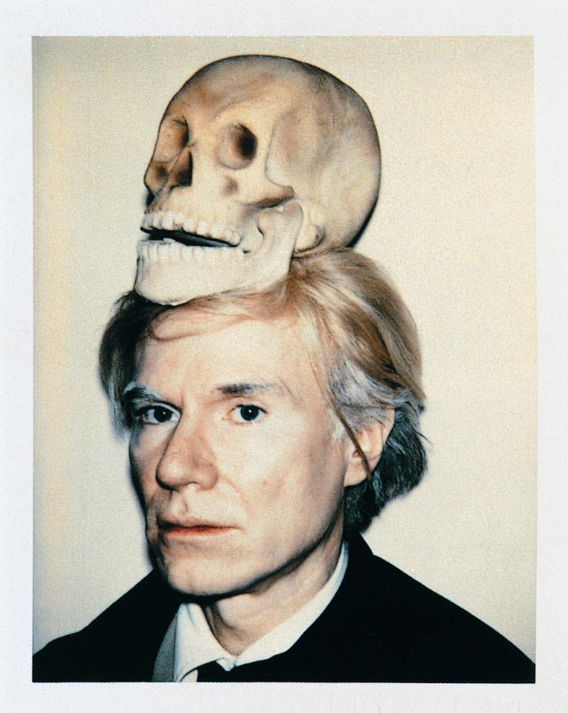
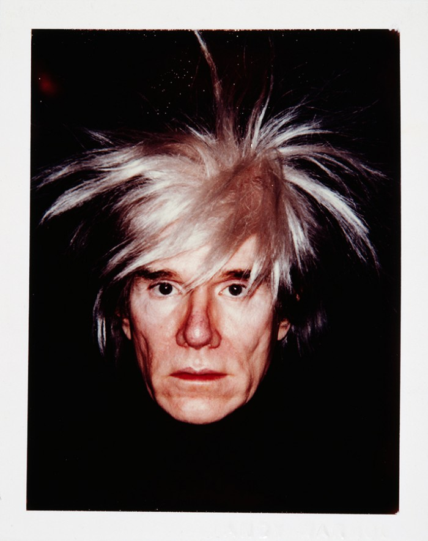
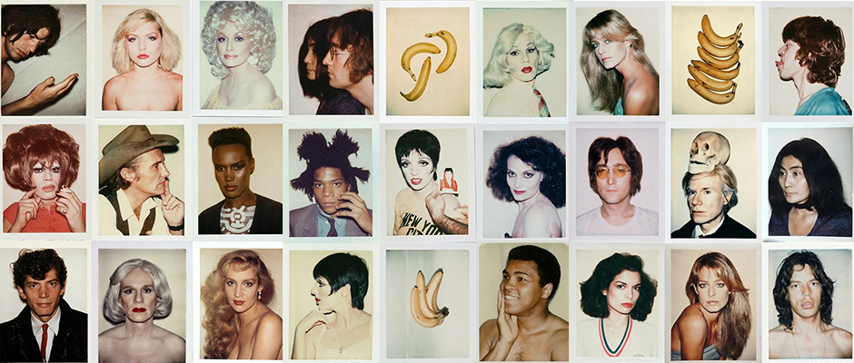

"If you want to know all about
Andy Warhol, just look at the surface of my paintings and films and me, and there I am. There’s nothing behind it."
Andy Warhol, The East Village Other, 1966

He was an American artist, director and producer who was a leading figure in the visual art movement known as
pop art. His works explore the relationship between artistic expression, celebrity culture, and advertising that flourished by the 1960s. Some of the mediums he's worked on are
- Silkscreen Printing
- Painting
- Photography
The pre-Instagram Instagram
Warhol was a relentless chronicler of life and its encounters. Carrying a Polaroid camera from the late 1950s until his death in 1987, he amassed a huge collection of instant pictures of friends, lovers, patrons, the famous, the obscure, the scenic, the fashionable, and himself. His polaroids were the pre-Instagram Instagram.

"In the future, everyone will be world famous for 15 minutes."